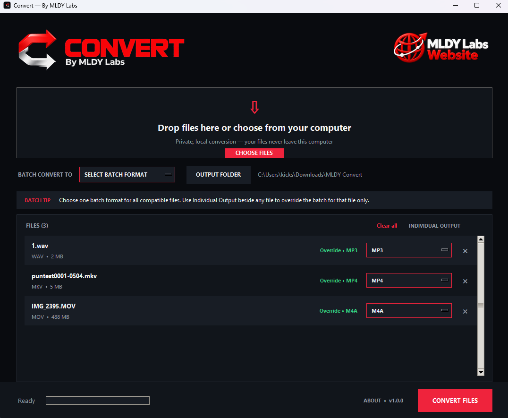

FILE CONVERSION
Convert
A straightforward local batch converter for images, documents, PDFs, spreadsheets, audio, video and archives.
Download for WindowsConvert v1.0.0 · Windows installer · Official MLDY Labs download
A straightforward local batch converter for images, documents, PDFs, spreadsheets, audio, video and archives.
Download for WindowsConvert v1.0.0 · Windows installer · Official MLDY Labs download
This installer is distributed directly by MLDY Labs. Current version: 1.0.0. Installer size: 69.00 MB.
SHA-256: 55ba351561f7e38e5ebad6e4a4e1d521b9ba541bfacafce274d655e373044836 Windows may display a SmartScreen or security prompt for an unsigned application. Confirm that your download came from this official product page before continuing.